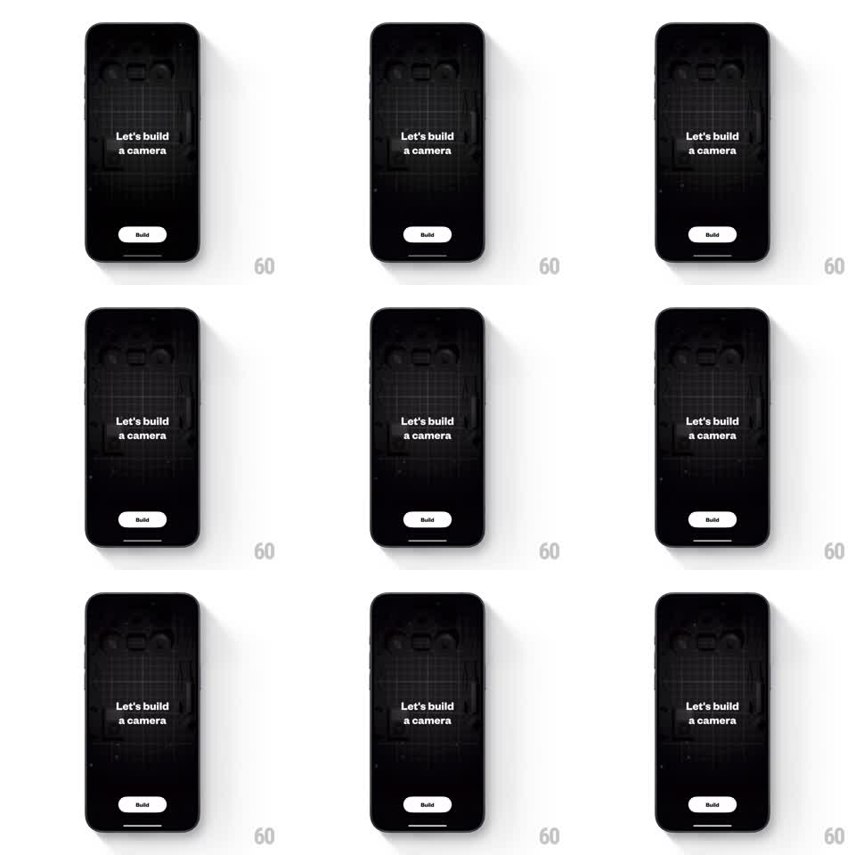

Media
Frame-by-frame

Rebuild this animation 1:1: Not Boring Camera's get-started splash - a dark "Let's build a camera" screen where faint dust particles drift and glint over the camera-blueprint background behind a white Build button.

Rebuild this animation 1:1: Not Boring Camera's get-started splash - a dark "Let's build a camera" screen where faint dust particles drift and glint over the camera-blueprint background behind a white Build button. ## Integration Integration: stack-agnostic spec - springs given as stiffness/damping, timed motions as duration + curve; map every value to your framework and animation library of choice. ## Scene Near-black screen: a faint blueprint camera drawing fills the background (~8% opacity), centered two-line title "Let's build" / "a camera" in white, and a white pill "Build" button anchored near the bottom. ## Motion spec Pattern: ambient particle drift behind static onboarding copy. - Tiny dust motes (2-4pt, white at 10-25% opacity) spawn across the screen and drift slowly upward-right (8-16pt/s) with a gentle sinusoidal sway (amplitude 6pt, period 3-5s, randomized phase). - Each particle twinkles: opacity pulses 0.1 -> 0.25 -> 0.1 over its own 2-4s cycle; a rare few (1 in 12) flare briefly to 60% with a 4-point star glint (300ms). - Particles fade in on spawn and out at the top edge (400ms); a steady population of ~30 is maintained. - The blueprint background breathes almost imperceptibly (opacity 7% -> 9%, 8s loop). - The Build button idles with a soft glow pulse (shadow opacity 0.2 -> 0.35, 2.4s). ## Calibration - Motion is felt, not seen: no particle exceeds 16pt/s; nothing ever crosses the title text. - Frame rate stays at 60fps - this is a pure GPU layer, no layout work per frame. ## Reduced motion Static starfield: particles frozen at 15% opacity, no drift or twinkle. ## Don't miss - The title and Build button stay perfectly static - all life is in the background. - Keep particles behind all text and UI.